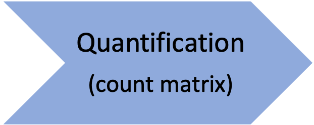
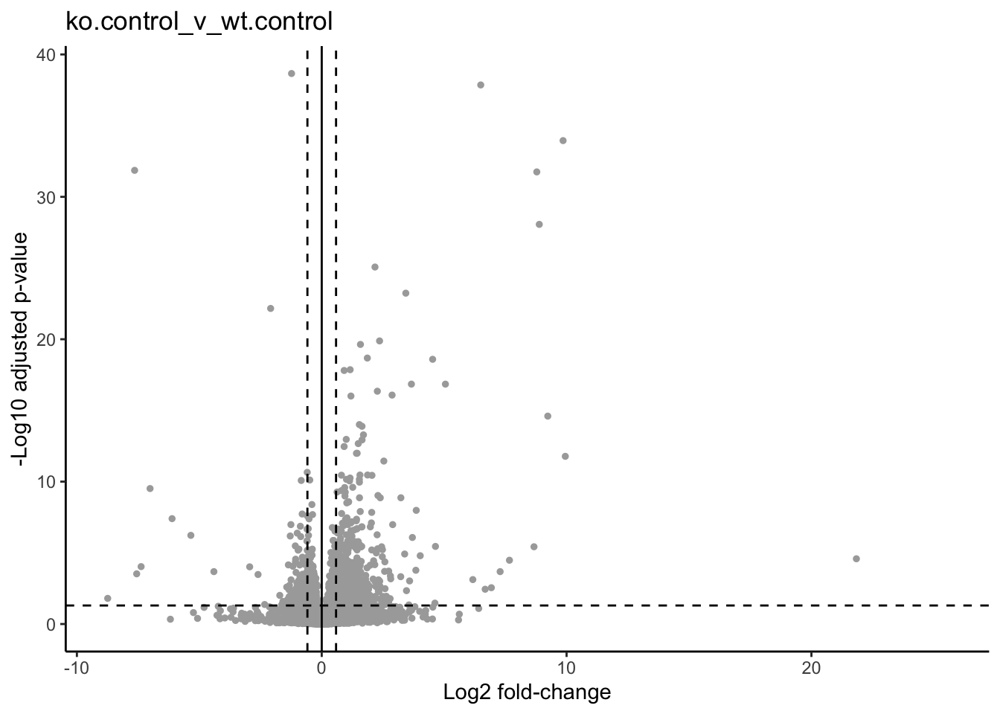
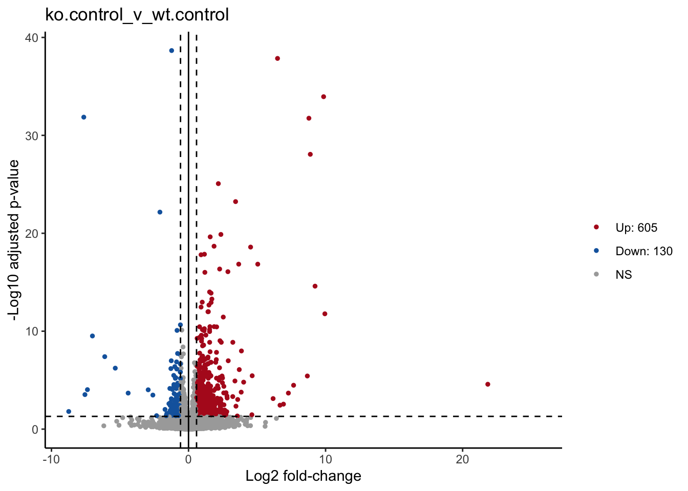

Objectives:
- Understand advantages of using gene ids when analyzing data.
- Given a list of ENSEMBL gene ids, add gene symbols and Entrez accessions.
- Generate common visualizations for differential expression comparisons
- Understand reasonable thresholds for statistically significant differentially expressed genes
- Discuss options for functional enrichments
Here we will generate summary figures for our results and annotate our DE tables.

TODO: double check references to annotated table prior to running annotations
Part of differential expression analysis is generating visualizations to share our results. While the DESeq2 tutorial provides examples of other visualizations, a common visualization to summarize DE comparisons are volcano plots.
As described by this Galaxy project tutorial, a volcano plot is a type of scatterplot that shows statistical significance (adjusted p-value) versus magnitude of change (fold change). It allows us to quickly identify genes with large fold changes that are also statistically significant. In a volcano plot, the most upregulated genes are towards the right, the most downregulated genes are towards the left, and the most statistically significant genes are towards the top.
First, we need to set thresholds for determining significant genes. A reasonable threshold would be a fold-change of less than -1.5 or greater than 1.5 and an adjusted pvalue less than 0.05.
fc <- 1.5
pval <- 0.05Then, we need to sep up some objects to run our plotting code, creating a new object that will have the right shape for plotting, labeling our comparison of interest, and setting up our output directory
df<- res_WT[order(res_WT$padj),] #select our data of interest
df <- as.data.frame(df) #convert our object type
df <- cbind("id" = row.names(df), df) #set rownames to valid column
str(df)## 'data.frame': 24693 obs. of 7 variables:
## $ id : chr "ENSMUSG00000105263" "ENSMUSG00000069306" "ENSMUSG00000069045" "ENSMUSG00000086503" ...
## $ baseMean : num 4504 7458 876 29135 650 ...
## $ log2FoldChange: num -1.23 6.5 9.86 -7.65 8.78 ...
## $ lfcSE : num 0.0889 0.4789 0.7603 0.6086 0.7007 ...
## $ stat : num -13.9 13.6 13 -12.6 12.5 ...
## $ pvalue : num 8.40e-44 5.71e-42 1.91e-38 2.84e-36 4.81e-36 ...
## $ padj : num 1.47e-39 5.00e-38 1.11e-34 1.24e-32 1.68e-32 ...Comparison <- "ko.control_v_wt.control"
plotPath = "figures/"Once we’ve setup the annotations we need, we can proceed with generating the volcano plot, including our thresholds.
pdf(file = paste0(plotPath,'VolcanoPlot_', Comparison, '.pdf'), onefile = FALSE)
# Initialize the plot, saving as object 'p' and specifying the plot type as 'geom_point'
p <- ggplot(df, aes(x = log2FoldChange, y = -log10(padj))) +
geom_point(shape = 21, fill= 'darkgrey', color= 'darkgrey', size = 1) +
theme_classic() +
xlab('Log2 fold-change') + ylab('-Log10 adjusted p-value')
# Add threshold lines
p <- p +
geom_vline(
xintercept = c(0, -log2(fc), log2(fc)),
linetype = c(1, 2, 2),
color = c('black', 'black', 'black')) +
geom_hline(
yintercept = -log10(pval),
linetype = 2,
color = 'black')
# Add Title that includes comparison name
p <- p + ggtitle(as.character(Comparison))
print(p)
dev.off()## quartz_off_screen
## 2p
Now we need to subset our data to label the datapoints (genes) that pass our thresholds.
df$dot <- rep(3, nrow(df))
df$dot[which(df$padj <= pval & df$log2FoldChange < 0 & abs(df$log2FoldChange) >= log2(fc))] = 2
df$dot[which(df$padj <= pval & df$log2FoldChange > 0 & abs(df$log2FoldChange) >= log2(fc))] = 1
df$sig <- df$dot
#take top 5 up, down, then combine, assign label
top <- rbind(head(subset(df, df$dot == 1), 5),head(subset(df, df$dot == 2), 5))
top$label <- top$id
df <- merge(x = df, y = top[,c('id','label')], by = "id", all.x = TRUE)
#count the number of significan up and down genes, assign value for legend
df$dot <- factor(df$dot,levels = c(1,2,3), labels = c(paste0('Up: ', sum(df$dot == 1)),paste0('Down: ', sum(df$dot == 2)),'NS'))Once we’ve setup the annotations we need, we can proceed with generating the volcano plot.
pdf(file = paste0(plotPath,'VolcanoPlot_Fancier', Comparison, '.pdf'), onefile = FALSE)
p <- ggplot(df, aes(x = log2FoldChange, y = -log10(padj))) +
geom_point(aes(color = df$dot), size = 1) +
theme_classic() +
xlab('Log2 fold-change') + ylab('-Log10 adjusted p-value')
# specify colors for up-/down-/nonsignificant genes
p <- p + scale_color_manual(name = '', values=c('#B31B21', '#1465AC', 'darkgray'))
# add threshol lines
p <- p +
geom_vline(
xintercept = c(0, -log2(fc), log2(fc)),
linetype = c(1, 2, 2),
color = c('black', 'black', 'black')) +
geom_hline(
yintercept = -log10(pval),
linetype = 2,
color = 'black')
# Add Title that includes comparison name
p <- p + ggtitle(as.character(Comparison))
print(p)
dev.off()## quartz_off_screen
## 2p
For additional visualizations for our DE results, this HBC tutorial includes some nice examples.
It can be useful to annotate our results table with additional information to make them easier to interpret, such as adding additional gene information or better summarizing our DE results.
To generate a general summary of the DE results, we can use the summary function to generate a basic summary by DESeq2.
However, we can also use conditional statements to determine the number of genes that pass our thresholds for each comparison, which might be more informative.
[Question]: How would we identify the number of genes with adjusted p-values < 0.05 and a fold-change above 1.5 (or below -1.5)?
#summary(res_WT)
sum(res_WT$padj < 0.05 & abs(res_WT$log2FoldChange) >= log2(1.5), na.rm = TRUE)## [1] 735sum(res_Tx$padj < 0.05 & abs(res_Tx$log2FoldChange) >= log2(1.5), na.rm = TRUE)## [1] 1152How do the number of DE genes compare to what we observed from the PCA plots?
Thresholding on adjusted p-values < 0.05 is a standard threshold, but depending on the research question and/or how the results will be used, other thresholds might be reasonable.
How would we count the number of genes with a more stringent significance threshold (i.e. padj < 0.01), ignoring fold-change? How many DE genes would we have with these thresholds?
sum(res_WT$padj < 0.01, na.rm = TRUE)## [1] 713If we threshold only on significance, we still identify less DE genes than the 6057 identified in the paper. How should we interpret these differences? Are we in danger of missing relevant genes or, due to DESeq2’s stringency, are we better protected against irrelevant genes? One of the authors of DESeq2, wrote this blog post that detailed differences between DESeq2 and EdgeR but this review of multiple DE tools by Costa-Silva, Domingues, and Martins Lopes may also be useful for making choices for your own data.
You may be interested in identifying only the genes that pass your significance thesholds. A useful way to do this is to conditionally subset your results.
res_sig <- na.omit(res_WT)
res_sig <- res_sig[which(res_sig$padj < 0.05 & abs(res_sig$log2FoldChange) >= log2(1.5)), ]
head(res_sig)For more details about subsetting tables in R, we recommend reviewing the Data Carpentry manipulating and analyzing data module. We can also annotate our results to include a column that identifies our significant genes.
res_WT_DE <- res_WT # copy table
# add a column and assign all genes are non-significance
res_WT_DE$Call <- rep(FALSE, length(res_WT$baseMean))
# change 'Call' column to TRUE if meets conditions for significant differences
res_WT_DE[which(!is.na(res_WT_DE$padj) & res_WT_anno$padj < 0.05 & abs(res_WT_DE$log2FoldChange) >= log2(1.5)), ]$Call <- TRUE
# reorder table to rank significant genes at the top
res_WT_DE <- res_WT_DE[order(-res_WT_DE$Call),]Bioconductor provides many tools and resources to facilitate access to genomic annotation resources.
We can access additional genomic annotations using the bioMart package. To identify we’ll structure our ‘query’ or search of the bioMart resources to use the ENSEMBL id from our alignment to add the gene symbols and gene description for each gene.
Since UCSC and ENSEMBL are two difference reference builds, not all genes are present in both references, as outlined in this comprehensive review of reference genomes by Zhao & Zhang. Additionally, since gene symbols can change over time or be ambiguous we use and recommend using the EMSEMBL reference genome and ENSEMBL ids for alignments.
To proceed with our BioMart query, we will first load the biomaRt library & choose what reference we want to access. For a more detailed walk through of using biomaRt, this training module might be useful, including what to do when annotations are not 1:1 mappings.
library("biomaRt")
# using an archived host since my R/Bioconductor versions are out of date
listMarts()## biomart version
## 1 ENSEMBL_MART_ENSEMBL Ensembl Genes 104
## 2 ENSEMBL_MART_MOUSE Mouse strains 104
## 3 ENSEMBL_MART_SNP Ensembl Variation 104
## 4 ENSEMBL_MART_FUNCGEN Ensembl Regulation 104# choose ensembl database since have ENSEMBl gene ids, using
ensembl <- useMart("ENSEMBL_MART_ENSEMBL")
# search for mouse
searchDatasets(mart = ensembl, pattern = "mus")## dataset description version
## 18 bmusculus_gene_ensembl Blue whale genes (mBalMus1.v2) mBalMus1.v2
## 103 mmoschiferus_gene_ensembl Siberian musk deer genes (MosMos_v2_BIUU_UCD) MosMos_v2_BIUU_UCD
## 107 mmusculus_gene_ensembl Mouse genes (GRCm39) GRCm39
## 157 psimus_gene_ensembl Greater bamboo lemur genes (Prosim_1.0) Prosim_1.0
## 181 smaximus_gene_ensembl Turbot genes (ASM1334776v1) ASM1334776v1
## 196 umaritimus_gene_ensembl Polar bear genes (UrsMar_1.0) UrsMar_1.0Note that this process takes some time and will take up a larger amount of working memory so proceed with caution if you try to run these commands on a laptop with less than 4G of memory
# redefine ensembl with species specific database
ensembl <- useDataset("mmusculus_gene_ensembl", mart=ensembl)To identify possible filters to restrict our data, we can use the listFilters function. To identify the attributes we want to retrive, we can use the listAttributes function. There are also search functions to help narrow down the available options.
head(listFilters(mart = ensembl), n = 20)
head(listAttributes(ensembl), n = 30)Next, we’ll build our query to retrive the information we want to add to our DE results table.
## wasn't working for my version of biomaRt but might work for you
GeneKey <- getBM(attributes=c('ensembl_gene_id', 'external_gene_name'),
filters = 'ensembl_gene_id',
values = row.names(assay(dds)),
mart = ensembl) # will take some time to run## Batch submitting query [=================>-------------------------------------------------------------------------] 20% eta: 1m Batch
## submitting query [===================================>-------------------------------------------------------] 40% eta: 29s Batch submitting
## query [======================================================>------------------------------------] 60% eta: 15s Batch submitting query
## [========================================================================>------------------] 80% eta: 6shead(GeneKey)## ensembl_gene_id external_gene_name
## 1 ENSMUSG00000000001 Gnai3
## 2 ENSMUSG00000000028 Cdc45
## 3 ENSMUSG00000000031 H19
## 4 ENSMUSG00000000037 Scml2
## 5 ENSMUSG00000000049 Apoh
## 6 ENSMUSG00000000056 NarfNow that we have the ENSEMBL information and a gene symbol to match to our results, we can add this to our DE results table.
res_WT_anno <- res_WT # copy table
res_WT_anno <- cbind(genes=row.names(res_WT_anno), res_WT_anno[ ,c(1:6)])
res_WT_anno <- as.data.frame(res_WT_anno)
# combine the two tables using the merge function (similar to join from `tidyverse`)
res_WT_anno <- merge(GeneKey, res_WT_anno, by.x = "external_gene_name", by.y="genes", all.x = FALSE, all.y = TRUE)
head(res_WT_anno)## external_gene_name ensembl_gene_id baseMean log2FoldChange lfcSE stat pvalue padj
## 1 ENSMUSG00000000001 <NA> 6255.787330 -0.013701731 0.09318662 -0.14703540 0.8831040821 0.961003102
## 2 ENSMUSG00000000028 <NA> 1337.989818 0.522678839 0.13597532 3.84392445 0.0001210823 0.003915367
## 3 ENSMUSG00000000031 <NA> 3.773626 -1.156215091 1.60061324 -0.72235757 0.4700746650 NA
## 4 ENSMUSG00000000037 <NA> 27.563473 -0.279210114 0.47647640 -0.58598938 0.5578826494 0.804474952
## 5 ENSMUSG00000000049 <NA> 2.256963 4.011334948 1.88908476 2.12342772 0.0337180265 NA
## 6 ENSMUSG00000000056 <NA> 2194.178477 -0.008213194 0.17732202 -0.04631796 0.9630568262 0.988889835Notice that not all genes were annotated with an ENSEMBl gene id or gene description. While we are able to annotate our results, we should be very cautious as the gene symbol is not a good unique identifier plus we did not use a UCSC annotation resource so the HUGO gene symbol may not always match. However, this code is similar to the steps needed to annotate ENSEMBL id based results, like what would have been generated from yesterday’s alignments, with more interpretable gene symbols.
Note: For additional information regarding bioMart, please consult the ENSEMBL bioMart vignette or the broader Bioconductor Annotation Resources vignette.
A key aspect of our analysis is preserving the relevant datasets for both our records and for downstream applications.
The most relevant count tables are the raw, filtered count table that we used as the input for our analysis and the rlog normalized count table that we used for our quality control visualizations.
First, we’ll setup a new directory for our output tables.
dir.create("tables", showWarnings = FALSE)To output the raw counts, we will need to use the counts function to access the count table from within its larger DESeqDataSet object.
write.csv(counts(dds, normalized = FALSE), file="tables/DESeq2_raw_counts.csv")Then we’ll output the rlog count table, using the assay function to access the normalized count table from within its larger DESeqDataSet object.
write.csv(assay(rld), file="tables/DESeq2_rlogNormalized_counts.csv")Next we’ll write out our DE results for the KD comparison to file, since we added additional information to that table.
write.csv(res_WT_anno,
row.names = FALSE,
na = ".",
file="tables/DEResults_ko.control_v_wt.control_annotated.csv")If we generated another comparsion, we could repeat our annotations or write the DE results directly to file.
write.csv(res_Tx,
row.names = FALSE,
na = ".",
file="tables/DEResults_ko.Tx_v_wt.Tx.csv")In this section, we:
Overall, we’ve run through most of the building blocks needed to run a differential expression analysis and hopefully built up a better understanding of how differential expression comparisons work, particularly how experimental design can impact our results.
What to consider moving forward:
Let’s pause here for general questions about the last two days of content
Now that we have our DE results, have we address the biological question relevant to the authors of the original paper? On the one hand, yes - we now have two tables of genes that are impacted by change in Mov10 expression. But with two lists of genes alone, it can be difficult to find patterns or understand broader biological impacts.
What if we wanted to find out what genes were signifant in both comparisons? The intersect function, such as implimented as part of the dplyr package would be useful to identify shared significant genes. A venn diagram could be a way to visualize these overlaps.
A way to determine possible broader biological interpretations from the observed DE results, is functional enrichments. There are many options, such as some included in this discussion thread. Other common functional enrichments approaches are gene set enrichment analysis, aka GSEA, Database for Annotation, Visualization and Integrated Discovery, aka DAVID, Ingenity, and [iPathway Guide]
The University of Michigan has license and support for additional tools, such as Cytoscape, so we recommend reaching out to staff with Taubman Library to learn more about resources that might be application toyour research.
sessionInfo()## R version 4.1.1 (2021-08-10)
## Platform: x86_64-apple-darwin17.0 (64-bit)
## Running under: macOS Big Sur 11.6
##
## Matrix products: default
## LAPACK: /Library/Frameworks/R.framework/Versions/4.1/Resources/lib/libRlapack.dylib
##
## locale:
## [1] en_US.UTF-8/en_US.UTF-8/en_US.UTF-8/C/en_US.UTF-8/en_US.UTF-8
##
## attached base packages:
## [1] stats4 stats graphics grDevices utils datasets methods base
##
## other attached packages:
## [1] biomaRt_2.50.0 data.table_1.14.0 RColorBrewer_1.1-2 pheatmap_1.0.12
## [5] ggrepel_0.9.1 dplyr_1.0.7 tidyr_1.1.3 ggplot2_3.3.5
## [9] DESeq2_1.34.0 SummarizedExperiment_1.24.0 Biobase_2.30.0 MatrixGenerics_1.6.0
## [13] matrixStats_0.61.0 GenomicRanges_1.46.0 GenomeInfoDb_1.30.0 IRanges_2.28.0
## [17] S4Vectors_0.32.2 BiocGenerics_0.40.0 rmarkdown_2.10
##
## loaded via a namespace (and not attached):
## [1] bitops_1.0-7 bit64_4.0.5 filelock_1.0.2 progress_1.2.2 httr_1.4.2
## [6] tools_4.1.1 bslib_0.2.5.1 utf8_1.2.2 R6_2.5.0 DBI_1.1.1
## [11] colorspace_2.0-2 withr_2.4.2 tidyselect_1.1.1 prettyunits_1.1.1 bit_4.0.4
## [16] curl_4.3.2 compiler_4.1.1 xml2_1.3.2 DelayedArray_0.20.0 labeling_0.4.2
## [21] sass_0.4.0 scales_1.1.1 genefilter_1.76.0 rappdirs_0.3.3 stringr_1.4.0
## [26] digest_0.6.27 XVector_0.34.0 pkgconfig_2.0.3 htmltools_0.5.1.1 dbplyr_2.1.1
## [31] fastmap_1.1.0 highr_0.9 rlang_0.4.11 RSQLite_2.2.7 jquerylib_0.1.4
## [36] generics_0.1.0 farver_2.1.0 jsonlite_1.7.2 BiocParallel_1.28.0 RCurl_1.98-1.5
## [41] magrittr_2.0.1 GenomeInfoDbData_1.2.7 Matrix_1.3-4 Rcpp_1.0.7 munsell_0.5.0
## [46] fansi_0.5.0 lifecycle_1.0.0 stringi_1.7.3 yaml_2.2.1 zlibbioc_1.16.0
## [51] BiocFileCache_2.2.0 grid_4.1.1 blob_1.2.2 parallel_4.1.1 crayon_1.4.1
## [56] lattice_0.20-44 splines_4.1.1 annotate_1.48.0 hms_1.1.0 locfit_1.5-9.4
## [61] knitr_1.33 pillar_1.6.2 geneplotter_1.72.0 XML_3.99-0.6 glue_1.4.2
## [66] evaluate_0.14 BiocManager_1.30.16 vctrs_0.3.8 gtable_0.3.0 purrr_0.3.4
## [71] assertthat_0.2.1 cachem_1.0.5 xfun_0.25 xtable_1.8-4 survival_3.2-11
## [76] tibble_3.1.3 AnnotationDbi_1.32.3 memoise_2.0.0 ellipsis_0.3.2These materials have been adapted and extended from materials listed above. These are open access materials distributed under the terms of the Creative Commons Attribution license (CC BY 4.0), which permits unrestricted use, distribution, and reproduction in any medium, provided the original author and source are credited.